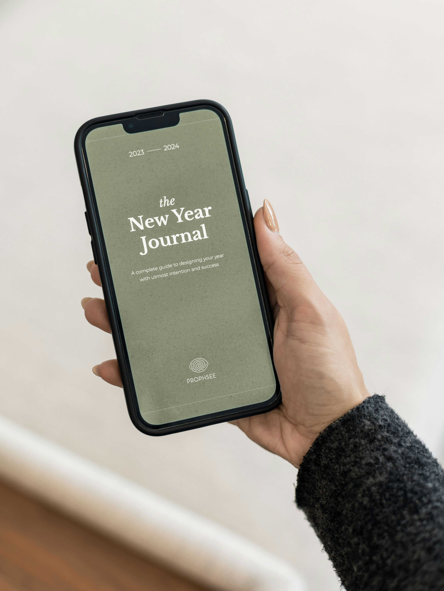
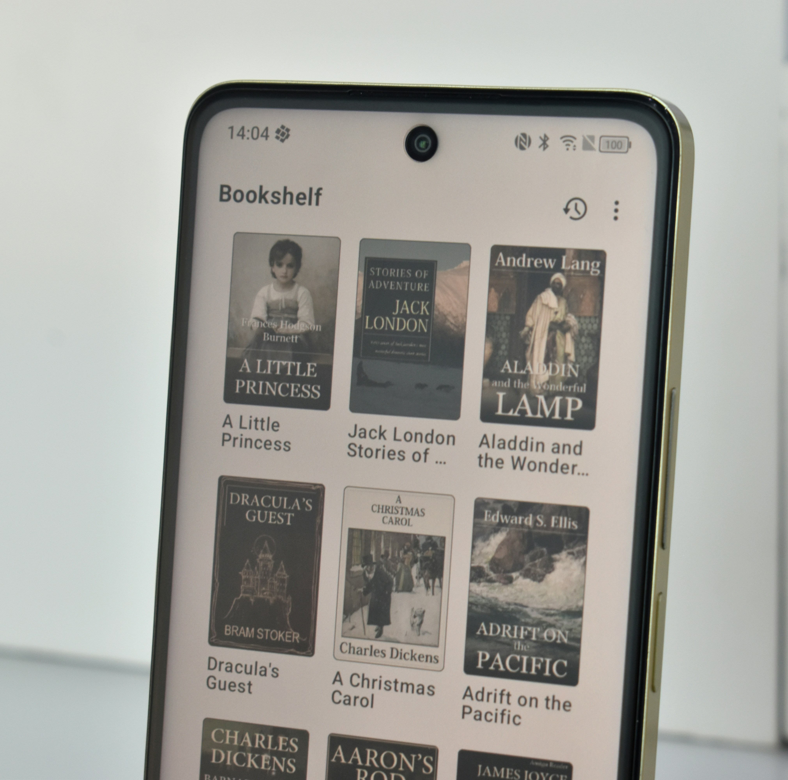
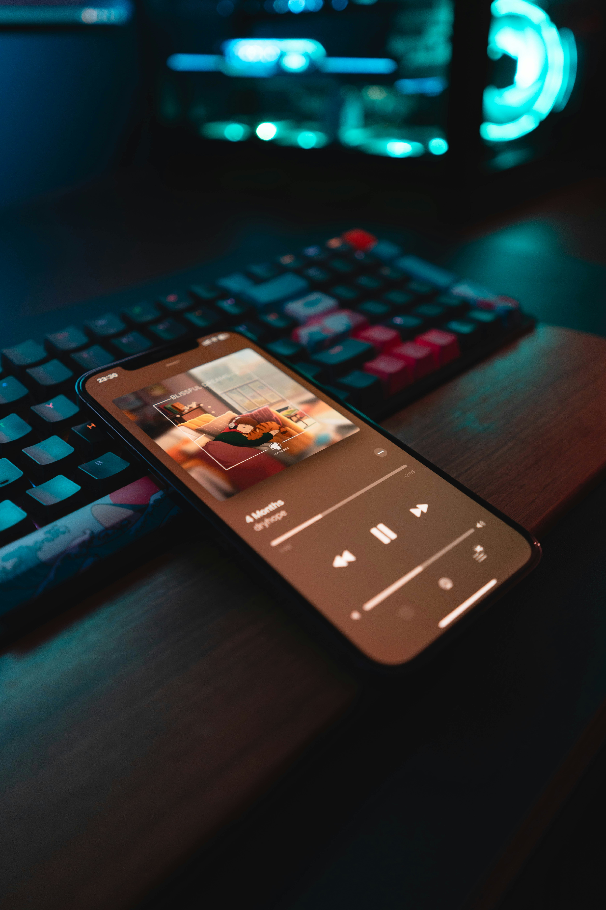

hey, i'm michelle.
full-stack software engineer
i build full-stack digital products from database to browser, designed to feel as good as they function.
i care about usability, aesthetics, and the kind of emotional intentionality that makes software feel genuinely human.
good engineering and beautiful design aren't a trade-off. for me, they're the standard.
the person behind the pixels
+ how i workdesign philosophy, process + intention
+ projects + case studiesstories told through code and design
+ servicescreative development for thoughtful brands
+ work with melet's build something intentional together
+ get in touchmy inbox is always open
who am i?
building software with softness and intention
i'm michelle, a full-stack software engineer with a deep love for thoughtful systems, cozy aesthetics, and interfaces that feel genuinely good to use.
i believe great software isn't just functional. it's warm, intentional, and built with the people who use it firmly in mind. clean architecture, beautiful interfaces, and human-centered design aren't separate goals. they're the same goal.
when i'm not coding, you'll find me deep in iyashikei anime, hunting for the perfect matcha latte, or collecting visual inspiration from cozy cafés around the city.
the softgirl engineer.
my personal philosophy on what it means to build well.
i take beauty and utility seriously, not just as a clever pairing, but because i genuinely believe both matter.
i grew up surrounded by technology that worked, but felt cold, impersonal, and alienating. i want to build the opposite: software that feels thoughtful, welcoming, and deeply considered from the inside out.
the softgirl engineer isn't just an aesthetic. it's a lens that shapes everything i build, who i build for, and what i believe quality actually means.
aesthetic-first thinking
i believe software can be genuinely beautiful. color, spacing, typography, and motion aren't just decorative choices. they shape how people feel inside a product. good design creates clarity, comfort, and trust.
designing for the margins
i think deeply about who gets treated as the "default" user, and who gets pushed to the edges. the best products are built with a wider range of people, experiences, and needs in mind from the very beginning.
accessibility as default
accessibility isn't a checklist i revisit at the end of a project. it's part of how i think from the beginning. everyone deserves a web that works for them.
cross-cultural lens
i care about how interfaces translate across languages, cultures, and contexts. software that works well for one group is a starting point, not the final goal.
thoughtful systems with a human touch.
here's a look at some of the things i've been building. each one is a little piece of how i think, design, and engineer.

hoshii
a cozy anime + manga tracking app focused on emotional journaling and thoughtful discovery.

mochiboard
a soft productivity dashboard for creatives.

café compass
a café discovery app for finding cozy workspaces.

softshelf
a digital bookshelf + reading journal.

petalfm
lo-fi + ambient music discovery app.

lantern
a multilingual community platform for niche hobby groups and small creative communities.
thoughtful engineering for intentional products.
i partner with founders, small teams, and creative studios who want products built right: engineered thoughtfully, designed intentionally, and centered on the humans who actually use them.
web development
full-stack websites and applications built with performance, scalability, and thoughtful user experience in mind, from first commit to deployment.
ui/ux implementation
i turn interfaces into polished, responsive experiences with careful attention to spacing, typography, interaction, and motion that feels intentional rather than distracting.
accessibility auditing
accessibility is built into how i think about the web. i provide wcag-focused audits, keyboard and screen reader testing, and practical remediation guidance.
api + backend design
clean, maintainable backend systems and well-documented apis designed for clarity, scalability, and long-term sustainability.
consulting + code review
whether you need architecture feedback, frontend polish, or a second set of eyes on a technical decision, i offer thoughtful collaboration rooted in real-world experience.
ongoing collaboration
i love partnering with founders and small teams long-term to help shape products thoughtfully over time, not just ship features and disappear.
you shouldn't have to choose between beauty and functionality.
some people come to me for beautiful, intentional design. others need a reliable engineer who ships clean, scalable code. the best projects need both, and that's exactly where i work best.
how can i help you today?
you need a beautiful website
a site that feels intentional, loads quickly, and leaves an impression. not just another template with different colors and a logo swapped in.
best for: personal brands • portfolios • creative studios
you want both
i design in figma, think in systems, and build full-stack experiences with long-term maintainability in mind. you don't have to choose between aesthetics and engineering depth.
best for: startups • founders • thoughtful digital products
you need a reliable engineer
someone who communicates clearly, ships thoughtfully, and writes code that still makes sense months after launch, not just the day it goes live.
best for: growing teams • production apps • scalable systems
good products start with good conversations.
whether you have a fully-formed brief, or just a spark of an idea, i'd love to hear what you're building. i'm especially drawn to projects that center real people, value intentional design, and care about creating experiences that feel genuinely human. let's make something worth being proud of!
get in touch:
say hello!
currently open to freelance projects, creative collaborations, and thoughtful opportunities.
- linmicarm@gmail.com
- linkedin.com/in/linmicarm
- github.com/linmicarm
- check out my resume
- iyashicoded.com
thank you for stopping by! let's build something beautiful together. ✨